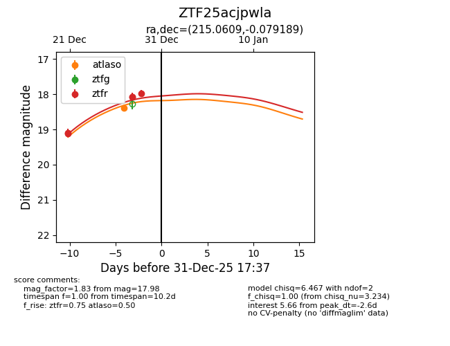
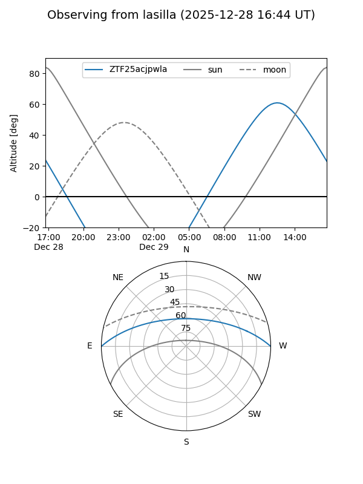
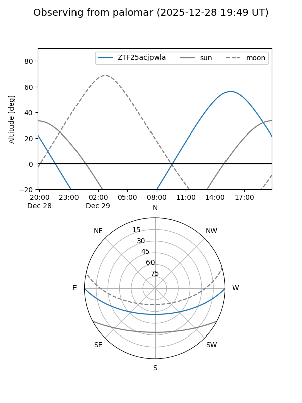
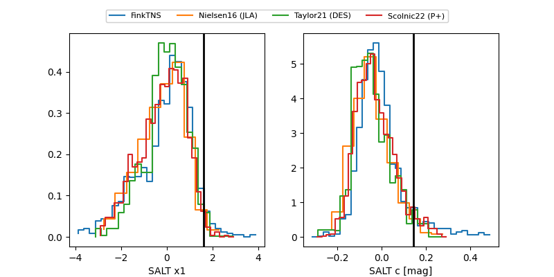

ZTF25acjpwla
Target ZTF25acjpwla at 2025-12-31 17:00
Aliases and brokers:
FINK:
Lasair:
ALeRCE:
alt names
ZTF25acjpwla (ztf,fink_ztf)
Coordinates:
equatorial (ra, dec) = 215.0609,-0.07919
equatorial (HMS+DMS) = 14:20:14.61,-00:04:45.08
galactic (l, b) = (344.6787,+55.42405)
Flags:
Photometry:
last atlaso=18.40, ztfr=17.98
1 atlaso, 5 ztfr detections
Lightcurve

Visibility


Additional plots
